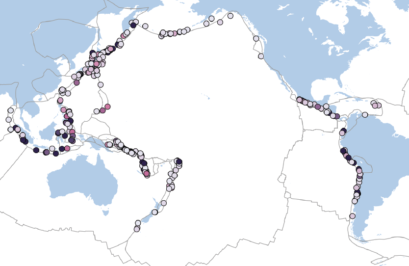
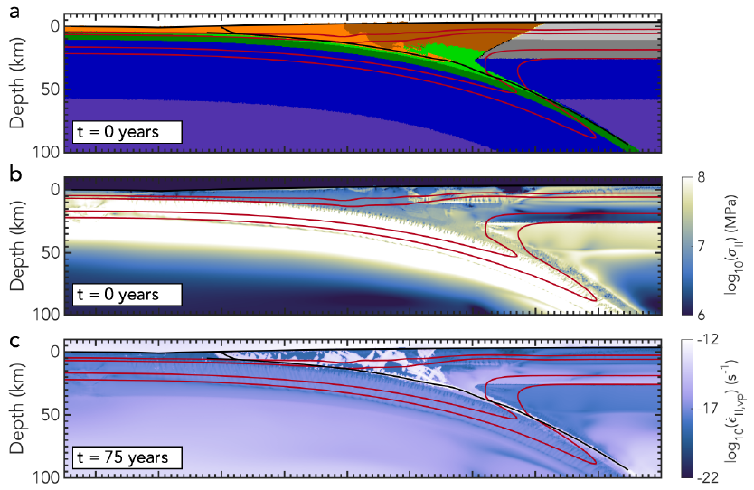

I am a postdoctoral research associate in geodynamics and seismology at the University of Leeds, United Kingdom under the supervision of Tim Craig.
Research
I use various numerical and observational methods to study subduction zones and the earthquakes that occur there. I recently finished my PhD on tsunamigenic earthquakes in subduction zones in the Seismology and Wave Physics group at ETH Zürich, Switzerland under the supervision of Andreas Fichtner and Ylona van Dinther.
-

Research
Learn More -

Publications
Learn More